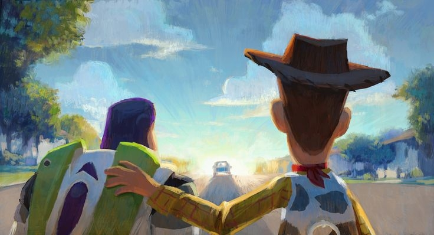
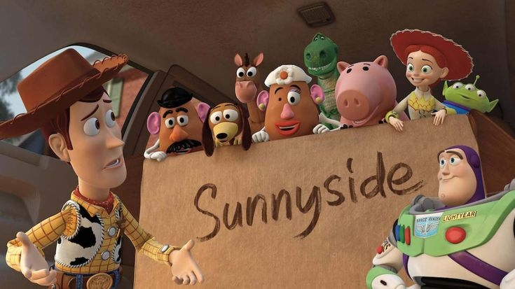

About Woody
우디는 카우보이 인형으로, 집단 내 질서를 중시하는 보수적이고 책임감 강한 리더입니다.

woody's characteristics
- 항상 친구들을 보호하며 도와준다.
- 책임감이 강하고 리더십이 뛰어나다.
- 상황에 따라 현실적이고 과감한 결단력을 보여준다.

[우디와 친구들]

우디는 카우보이 인형으로, 집단 내 질서를 중시하는 보수적이고 책임감 강한 리더입니다.


[우디와 친구들]